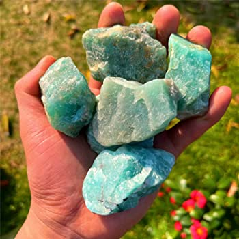
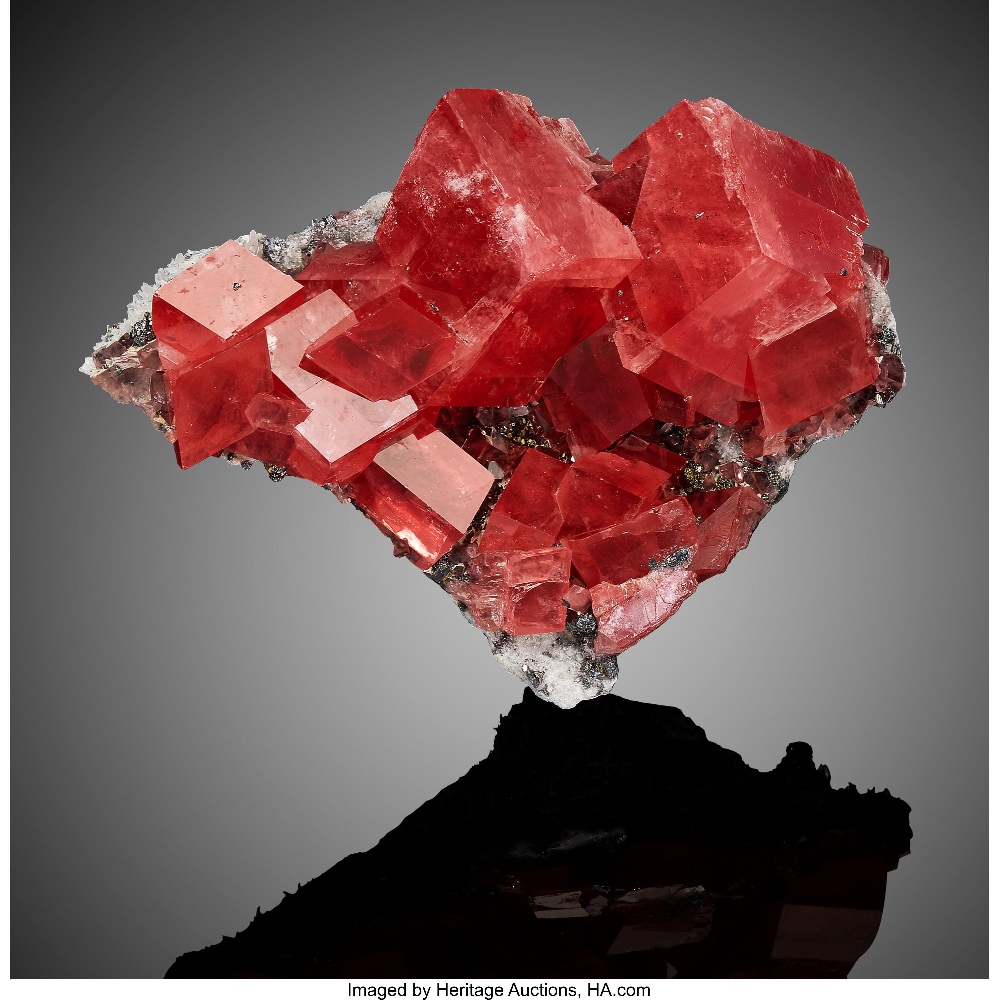
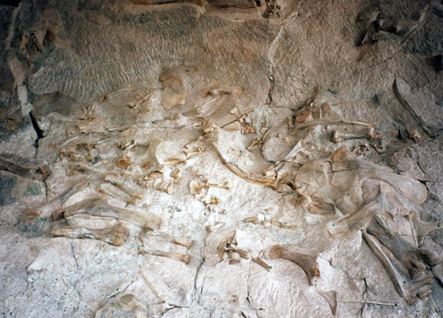
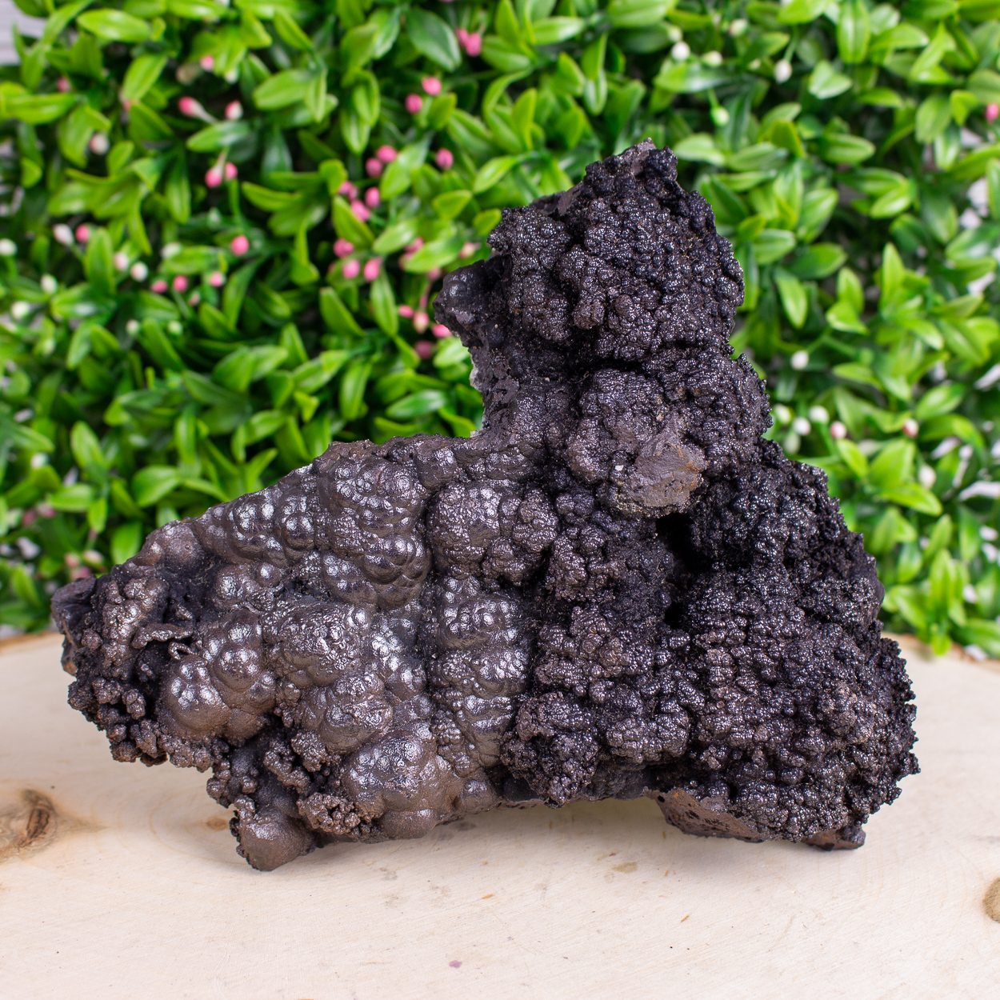
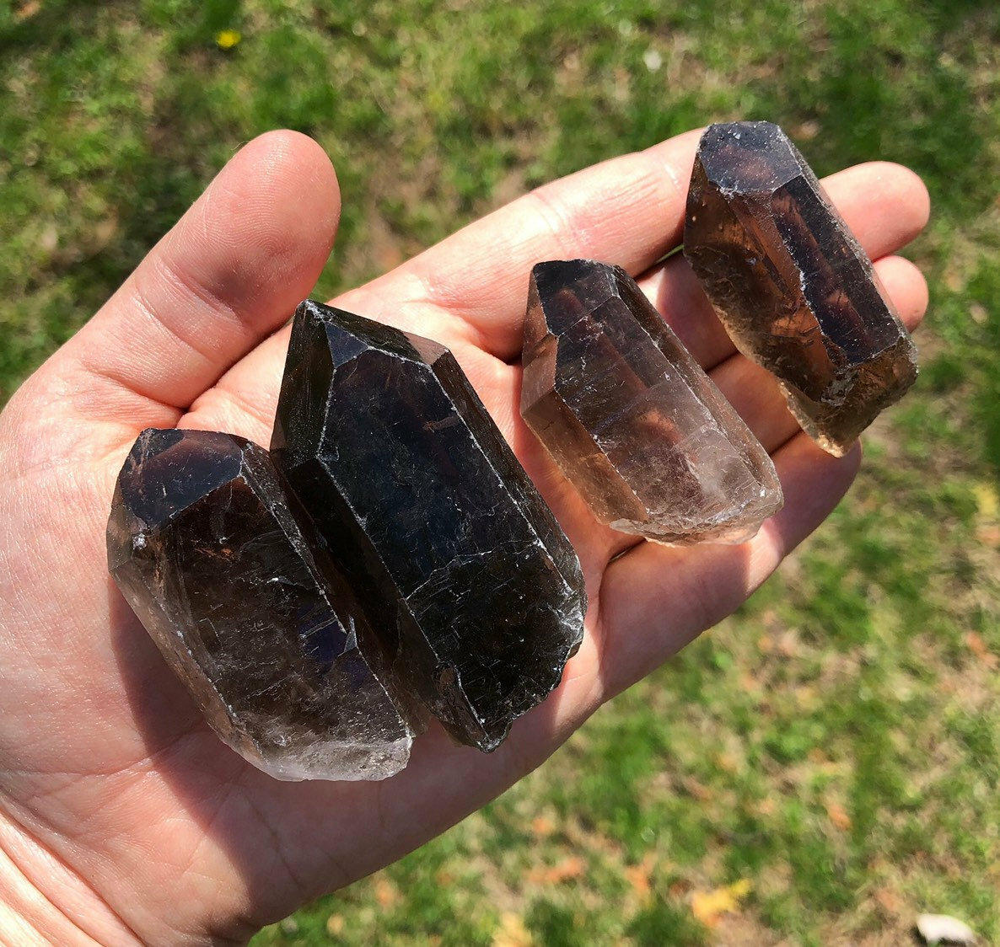

New here?

New to rockhounding and don't know where to start? Not to worry, we will show you the ropes. Click below to head over to our "Getting Started" guide
Getting StartedRocks & Minerals In Colorado


Colorado has some amazing rockhounding to offer, with a diverse array of minerals, gemstones, and fossils waiting to be discovered. You can find treasures like amazonite, smoky quartz, topaz, and even gold, while exploring iconic locations such as the Pikes Peak region, the San Juan Mountains, and the Book Cliffs. With its rich geological history and stunning landscapes, Colorado is truly a paradise for rockhounding enthusiasts.
Sponsored Dig Site

Own a digsite you would like to advertize in Colorado? Contact us for more information about being our sponsor of the month! Email sponsors@rockhounding.org for more information.
Dig With UsPopular Rocks In Colorado
-
 Aquamarine
AquamarineAquamarine is a blue variety of beryl and can be found in the Mount Antero area.
Read More -

Amazonite
Amazonite, a greenish-blue variety of microcline feldspar, can be found in the Pikes Peak area.
Read More -

Rhodochrosite
Rhodochrosite, known for its stunning red color, is abundant in the Sweet Home Mine near Alma.
Read More -
 Quartz
QuartzQuartz crystals can be found throughout Colorado, particularly in the Crystal Peak area.
Read More -
 Barite
BariteBarite, known for its characteristic tabular crystals, can be found in the Stoneham area.
Read More -
 Fluorite
FluoriteFluorite, a popular mineral for collectors, can be found in the Ouray and Silverton areas.
Read More -
 Wulfenite
WulfeniteWulfenite, a lead molybdate mineral, can be found in the Red Cloud Mine in La Plata County.
Read More -

Dinosaur Fossils
Dinosaur fossils can be found in the Morrison Formation, particularly at Dinosaur Ridge near Denver.
Read More -

Goethite
Goethite, an iron-bearing hydroxide mineral, can be found in the Lake George area.
Read More -

Smoky Quartz
Smoky Quartz, a brownish variety of quartz, can be found in the Pikes Peak area and Crystal Peak.
Read More
Popular Areas In Colorado
-
 Mount Antero
Mount AnteroMount Antero is known for its rich deposits of aquamarine, smoky quartz, and other minerals.
Read More -
 Pikes Peak
Pikes PeakPikes Peak is a popular location for finding amazonite, smoky quartz, and topaz.
Read More -
 Lake George Area
Lake George AreaLake George is well-known for its pegmatite deposits, including minerals like goethite and topaz.
Read More -
 Dinosaur Ridge
Dinosaur RidgeDinosaur Ridge near Denver is a famous location for finding dinosaur fossils and tracks.
Read More -
 Crystal Peak
Crystal PeakCrystal Peak is a great spot for collecting smoky quartz, amazonite, and topaz.
Read More -
 Creede Mining District
Creede Mining DistrictCreede Mining District in southwestern Colorado is famous for its silver and mineral specimens like galena and pyrite.
Read More
Geology of Colorado
The geology of Colorado is shaped by a complex history of tectonic activity and sedimentation, resulting in a rich variety of rock formations and mineral resources. The state's geological history dates back to the Precambrian period, with the formation of the ancient core of the continent.
During the Paleozoic era, Colorado was submerged beneath shallow seas, which led to the deposition of sedimentary layers, including limestone and shale. The Ancestral Rocky Mountains were formed during this time, only to be eroded away and later replaced by the modern Rocky Mountains during the Laramide orogeny in the late Cretaceous and early Paleogene periods.
The formation of the Rocky Mountains brought significant volcanic activity and further tectonic uplift, creating the stunning landscapes we see today. The state is known for its wealth of mineral resources, including gold, silver, and various gemstones, resulting from the diverse geological processes that have occurred throughout its history.
Colorado is also home to numerous fossil sites, preserving evidence of the state's ancient life, including dinosaurs, marine organisms, and plants. Some of these sites date back to the Mesozoic era, when Colorado was once again submerged beneath a shallow sea, leading to the deposition of the Morrison Formation, a world-renowned source of dinosaur fossils.
Today, Colorado's geology offers a unique opportunity for rockhounding enthusiasts, with abundant minerals, gemstones, and fossils to discover, as well as stunning geological features to explore, such as the Garden of the Gods, the Great Sand Dunes, and the Maroon Bells.